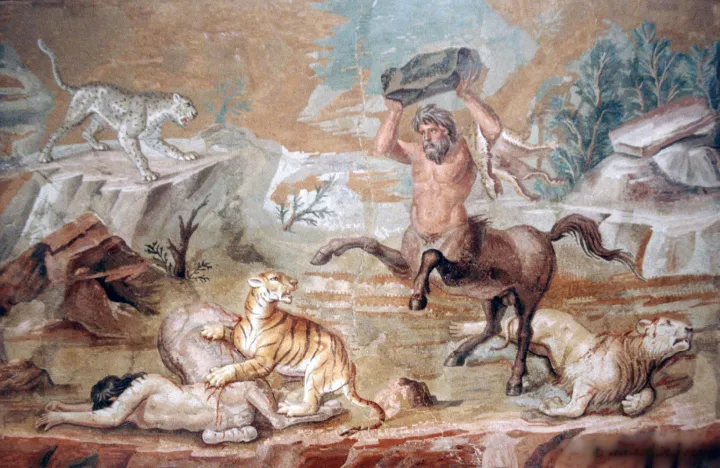
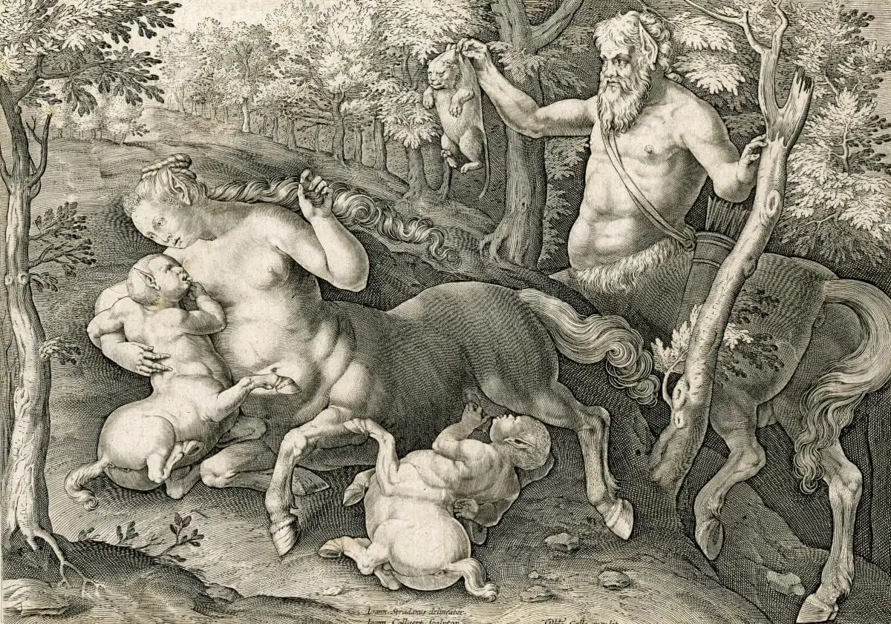

A centaur (/ˈsɛntɔːr, ˈsɛntɑːr/ SEN-tor, SEN-tar; Ancient Greek: κένταυρος, romanized: kéntauros; Latin: centaurus), occasionally hippocentaur, also called Ixionidae (Ancient Greek: Ιξιονίδαι, romanized: Ixionidai, "sons of Ixion"), is a creature from Greek mythology with the upper body of a human and the lower body and legs of a horse that was said to live in the mountains of Thessaly.[2] In one version of the myth, the centaurs were named after Centaurus, and, through his brother Lapithes, were kin to the legendary tribe of the Lapiths. Centaurs are thought of in many Greek myths as being as wild as untamed horses, and were said to have inhabited the region of Magnesia and Mount Pelion in Thessaly, the Foloi oak forest in Elis, and the Malean peninsula in southern Laconia. Centaurs are subsequently featured in Roman mythology, and were familiar figures in the medieval bestiary. They remain a staple of modern fantastic literature.

The centaurs were usually said to have been born of Ixion and Nephele. As the story goes, Nephele was a cloud made into the likeness of Hera in a plot to trick Ixion into revealing his lust for Hera to Zeus. Ixion seduced Nephele and from that relationship centaurs were created. Another version, however, makes them children of Centaurus, a man who mated with the Magnesian mares. Centaurus was either himself the son of Ixion and Nephele (inserting an additional generation) or of Apollo and the nymph Stilbe. In the latter version of the story, Centaurus's twin brother was Lapithes, ancestor of the Lapiths. Another tribe of centaurs was said to have lived on Cyprus. According to Nonnus, they were fathered by Zeus, who, in frustration after Aphrodite had eluded him, spilled his seed on the ground of that land. Unlike those of mainland Greece, the Cyprian centaurs were horned. There were also the Lamian Pheres, twelve rustic daimones (spirits) of the Lamos river. They were set by Zeus to guard the infant Dionysos, protecting him from the machinations of Hera, but the enraged goddess transformed them into ox-horned Centaurs. The Lamian Pheres later accompanied Dionysos in his campaign against the Indians. The centaur's half-human, half-horse composition has led many writers to treat them as liminal beings, caught between the two natures they embody in contrasting myths; they are both the embodiment of untamed nature, as in their battle with the Lapiths (their kin), and conversely, teachers like Chiron. The Centaurs are best known for their fight with the Lapiths who, according to one origin myth, would have been cousins to the centaurs. The battle, called the Centauromachy, was caused by the centaurs' attempt to carry off Hippodamia and the rest of the Lapith women on the day of Hippodamia's marriage to Pirithous, who was the king of the Lapithae and a son of Ixion. Theseus, a hero and founder of cities, who happened to be present, threw the balance in favour of the Lapiths by assisting Pirithous in the battle. The Centaurs were driven off or destroyed. Another Lapith hero, Caeneus, who was invulnerable to weapons, was beaten into the earth by Centaurs wielding rocks and the branches of trees. In her article "The Centaur: Its History and Meaning in Human Culture," Elizabeth Lawrence claims that the contests between the centaurs and the Lapiths typify the struggle between civilization and barbarism. The Centauromachy is most famously portrayed in the Parthenon metopes by Phidias and in a Renaissance-era sculpture by Michelangelo.
The most common theory holds that the idea of centaurs came from the first reaction of a non-riding culture, as in the Minoan Aegean world, to nomads who were mounted on horses. The theory suggests that such riders would appear as half-man, half-animal. Bernal Díaz del Castillo reported that the Aztecs also had this misapprehension about Spanish cavalrymen. The Lapith tribe of Thessaly, who were the kinsmen of the Centaurs in myth, were described as the inventors of horse-riding by Greek writers. The Thessalian tribes also claimed their horse breeds were descended from the centaurs.
